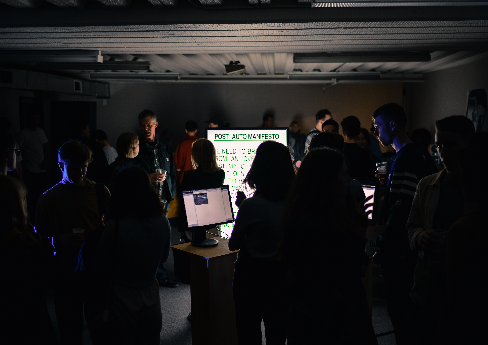
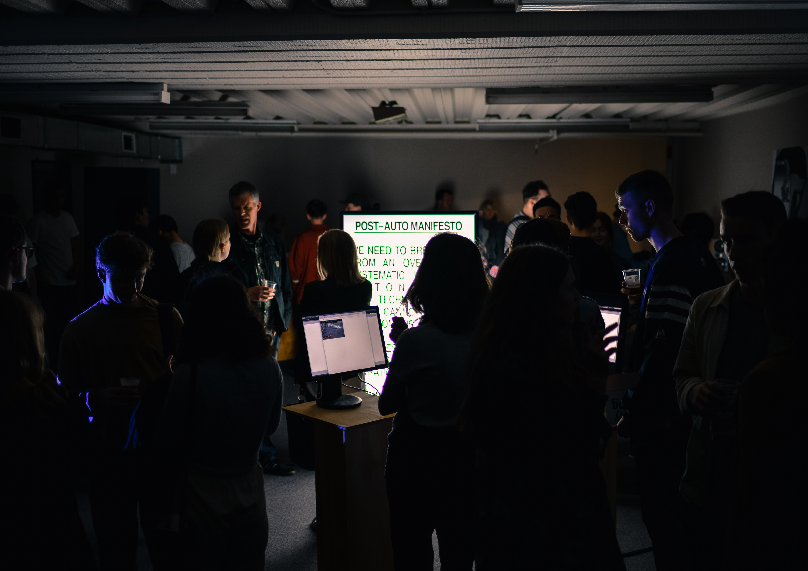
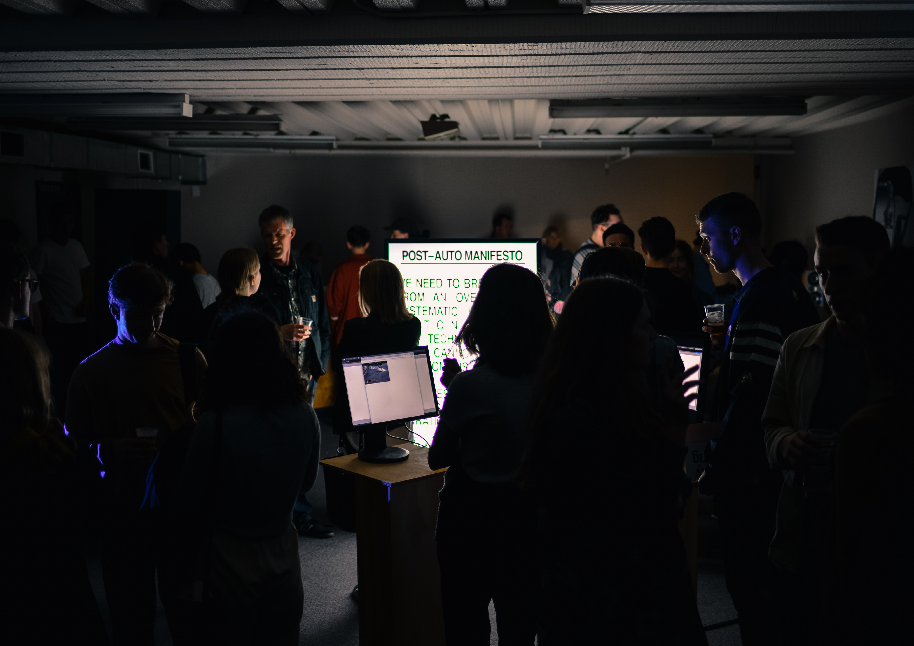

SLOWLY FAILING
2017


 



Brand and experience design
Based in New Zealand
Working at Strategy Creative
harryboyd1@gmail.com
+64226282975
2016
BDes (Hons)
Massey University
2017
Silver (Slowly Failing)
Best Awards, DINZ
Experience
→ Strategy Creative
→ Toi Aria, Design for Public Good
→ Immigration New Zealand
→ Museum of New Zealand, Te Papa Tongarewa
SLOWLY FAILING
2017
